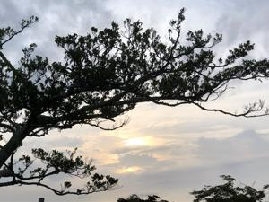
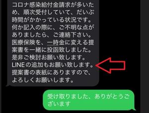
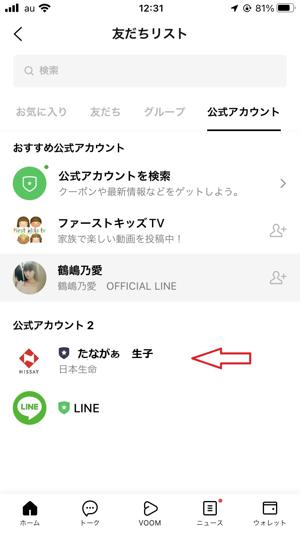

うるがいの話 ある日
最新: LINEアプリの友達【うるがいの話 ある日】とは 一日だけのプログです
『うるがいの話』の最新一日だけのプログで、通信料が少なく経済的だ。カニの画像をクリックすると全ての日付が載る『うるがいの話』サイトを表示します
|
|
【うるがいの話】 うるがい(ｳﾙｶﾞｲ urugai)とは、『もずくがに』の名前でとても大きくなります。 |
|---|---|
|
|
【カミマヤーの話】 猫のことを方言でマヤーといいます。カミマヤー（kamimayaa）とは、神の猫のことです。 |
|
【たながぁの音楽】 たながぁ（ﾀﾅｶﾞｰ tanagaa）とは手長えびのことで、何種類かあり大きいのは車 エビぐらいになります。 |

|
【ぶながぁの話】 ぶながぁ(ﾌﾞﾅｶﾞｰ bunagaa)とは、赤い髪の毛、赤い身体、そして身長は１ｍ２０ｃｍ ぐらい、川の蟹を食べているの目撃された。場所は沖縄県国頭郡大宜味村のと ある村僕の隣近所に住んでいる爺さんから、聞いた話です。 |
|
|
【ギーマの話】 ギーマ(giima)とは、山原の里山に咲くスズランに似た、 花を付けます。実は食べられます、 気が付くと口の周りが紫になっています。 |
2022年09月07日 (水）LINEアプリの友達
16:16
  
生命保険の人から、ＬＩＮＥの追加をお願いされていた。アイホンにはＬＩＮ
Ｅアプリはインストールしているが、利用したことがない。朝から、ネットを
みて、生命保険の人の電話番号を元に友達追加を行おうとする。「友達への追
加許可」をオンにし、電話番号で検索、『入力した電話番号は存在しないか検
索できません』、ん？、なんか手順間違っている？、でＬＩＮＥの画面を見る
と「知り合いかも？」と８名ほど、友達リストに載っている、ヤバ！。友達に
なりたくない輩も、子供を残しそれ以外はすべてブロックする。何かおかしい
と生命保険の人に電話した、『ＱＲコードが印刷した資料が、この前の封筒に
入っていませんでしたか？』、いいえ、ＳＭＳでいいので送って下さいとお願
いする。しばらくすると、生命会社の『ＬＩＮＥ ＷＯＲＫ』への登録ＵＲＬ
のＳＭＳが来た。そのまま、『ＬＩＮＥ ＷＯＲＫ』から生命保険の人を登録
する。トークで会話できる、だけど、友達リストに載っていないし、ＱＲコー
ドは？。調べた、『ＬＩＮＥ ＷＯＲＫ』は企業が運営する仕掛けで、友達リ
ストは［公式アカウント］に表示されていた。はー、生命保険の人の説明が悪
い！、と思った。と、友達登録していない高校時代の友達から、トークンが来
た『ヤンバルに来る時は家に寄ってクレ』と。隠遁生活をしたいので、シカと
し、これまたネットで『知らない人から届く迷惑トーク・電話への対策まとめ
』を参照し、友だち以外の相手からのメッセージを一切受信しない「メッセー
ジ受信拒否』の設定をした。
１６時０７分 ビットコインの総資産 ￥７、８５２↓